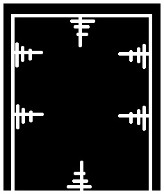

主页
Fekke
哈儿门
Haer Zra
*为了防止哈儿造反，本页面将不会被翻译为哈儿语。
*Ket haer neh dekrov, tet vebat ŭilav neh perevod ket haer langu.
哈儿门是让人变成哈儿的工具。
首先，我们来看看让人变成哈儿的方式——
哈儿门（费用：￥0.00元）：请参见下文，致死率0%
高台坠落法（费用：￥60000.00元）：让人从100m处头朝下坠落，致死率79%（实际上是100%，为了防止使用者慌张，故意减少）
火箭法（费用：￥100000.00元）：让火箭发射到11000m处，竖直向下击中人头，致死率99.98%（实际上是100%，为了防止使用者慌张，故意减少）
接下来，我们详细讲讲哈儿门。
图像：

原理：
以极高电压的电流击穿空气，将人作为导线瞬时多次通电，每次约0.001ms，以不同节奏快速电击不同身体部位，总用时约1s，
使人身体不受损，但是失去应激性、失去思考能力、智商降得极低（一般在20及以下），通常在麦吉尔实验下168h无反应即可认为已经成功变哈。